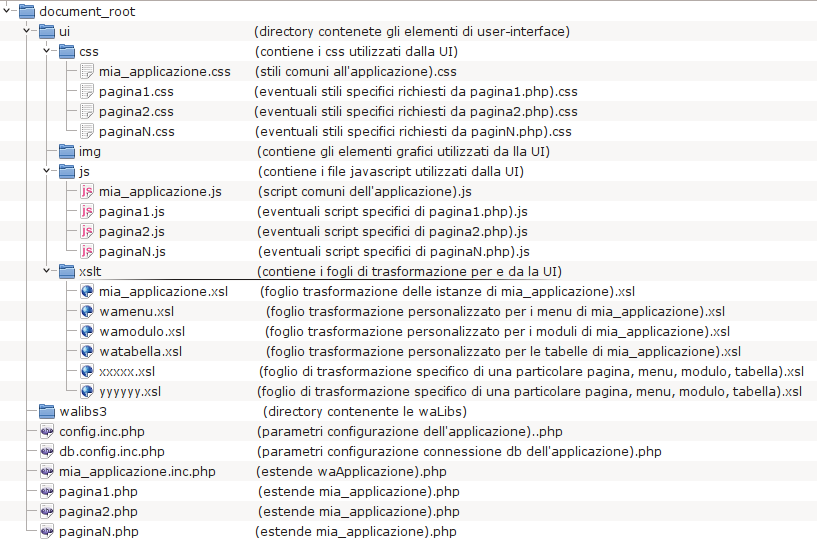

waLibs 3.x
Buone prassi - 1
Anche se non vincolante (fatto salvo l'odio che potreste
suscitare nei colleghi) è buona prassi che la struttura delle
directory dell'applicazione preveda questa gerarchia (la directory
walibs3 può essere un link simbolico e in caso di gestione di
diversi progetti, salvo casi particolari, è bene che lo sia):
